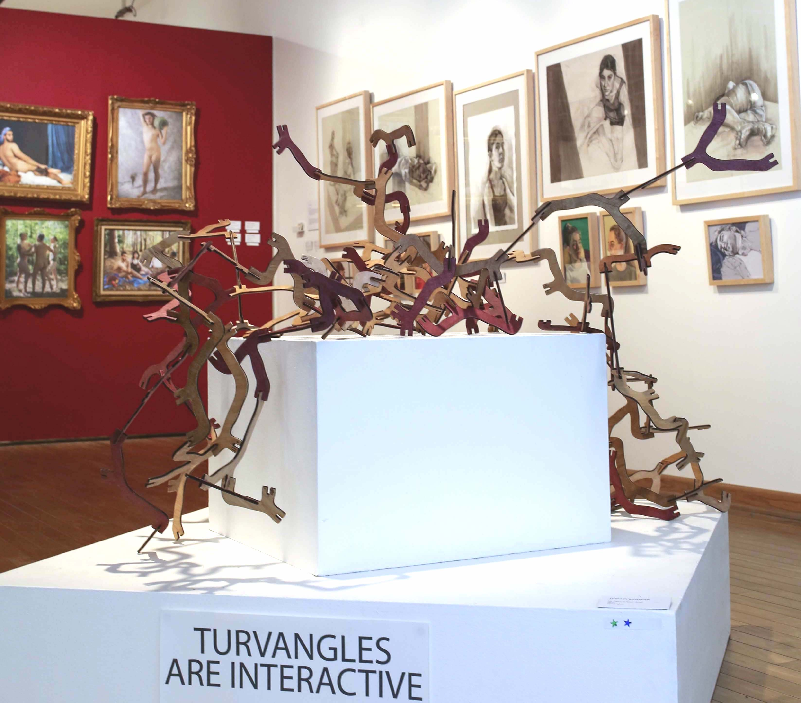
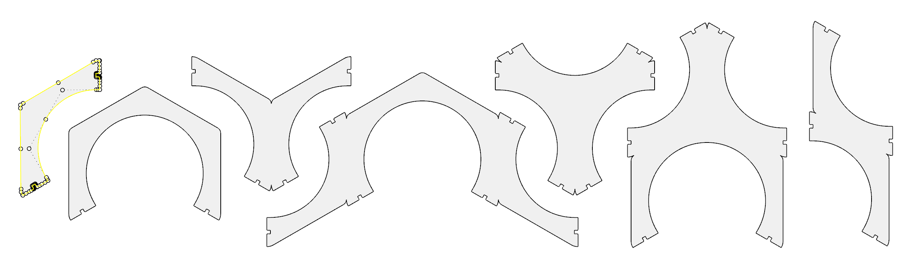
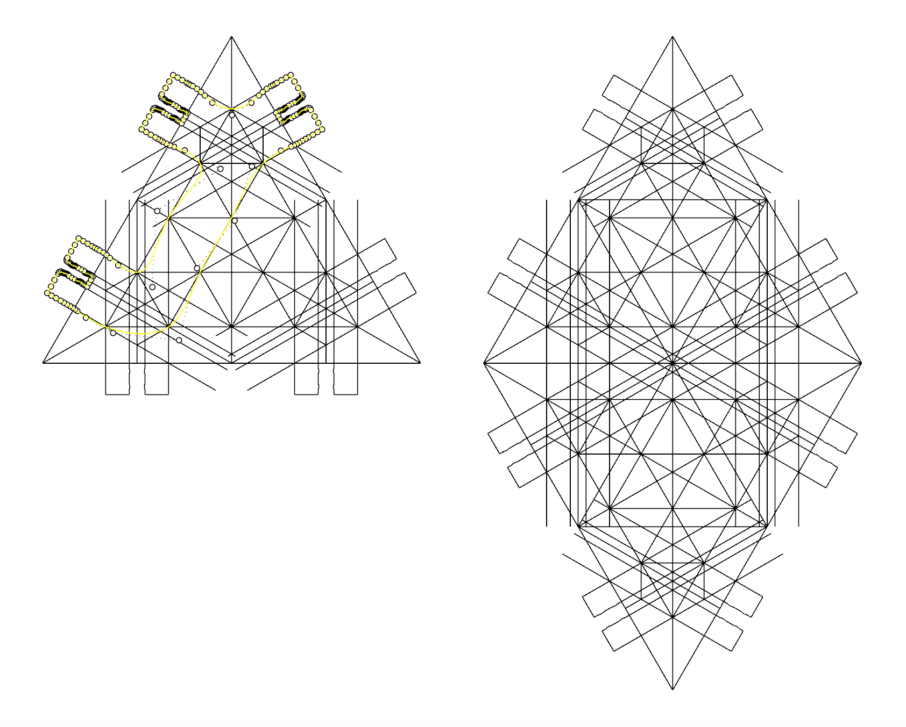
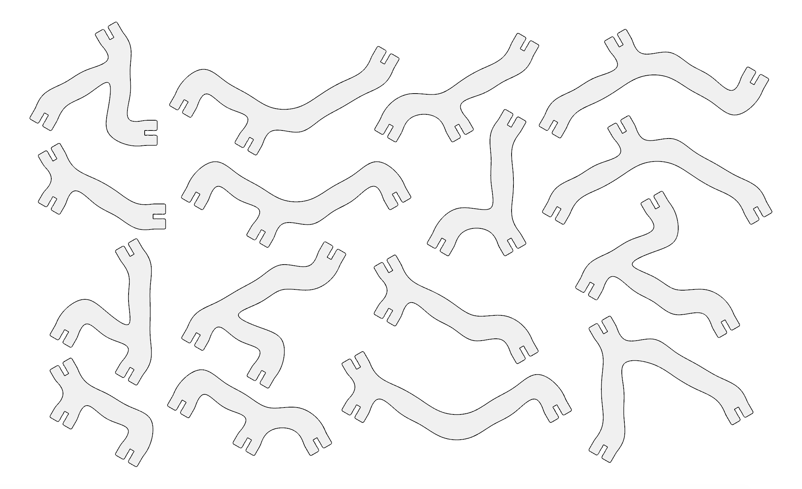
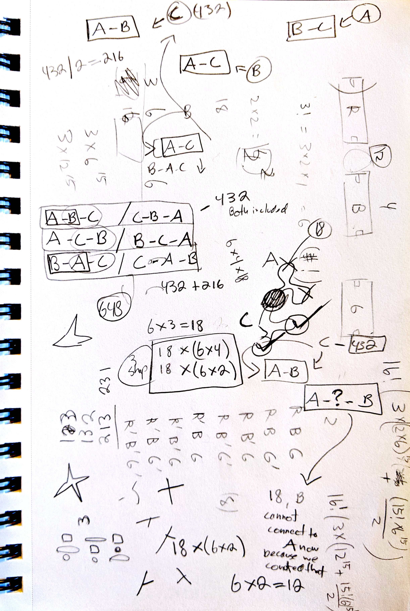

Modular shapes for an interactive spatial sculpture
For my graduating BFA gallery exhibition, I created Turvangles. They're a set of 16 different asymmetrical interlocking shapes that together allow users to form a myriad of mathematically unique spatial sculptures.
When I first started sketching out ideas for modular shapes, I was very drawn to working with non-right angles. I liked the idea of irregularity and wanted to introduce an unpredictable nature to the building process.
I knew I was planning to laser cut my final shapes out of wood, and this was my biggest constraint during ideation. Although I had infinite two-dimensional freedom, the third would just be a right-angled extrusion of whatever I came up with. I would essentially have flat plains intersecting perpendicularly. This meant I needed to create the spatial angles I was looking for through the design of the shapes themselves.
The first set that I cut and tested involved attaching multiple 120° arcs (the highlighted leftmost shape) together in different ways:

While I liked shapes having several connection points, it was impossible to fit new shapes at both ends of any 240° arc (shapes 2, 4, and 6 in the lineup). Other shapes had only two connection points which felt a bit boring.
As I was working on a revision, I realized something important: I had been trying to create interesting angles by going around the circumference of hexagons, but what are hexagons except six triangles put together? I could achieve the same angles more succinctly by going through triangles instead.
I started by creating the smaller template on the left in the picture below, and then made one shape for each unique combination of three connection points. (If a shape could be flipped to form a previous shape, it wasn’t unique.) This gave me four shapes, which didn’t seem like quite enough, so I mirrored the template and found an additional 12 shapes using the same method.
Possibilities
Okay, buckle up! We're diving into some math.
For the exhibition, I made several sets of Turvangles for people to play with. But technically, one set is composed of 16 unique Turvangle types. How many different sculptures, I wondered, could possibly be made using just one set of Turvangles?
Let’s start with just two different shapes. Each is asymmetrical and has 3 connection points. Holding one shape still, there are 6 different ways that we could attach the second shape (3 connection points * 2 sides) to any one connection point on the first shape. Multiply this by 3, the number of connection points on the first shape, and we have 18 different two-shape sculpture possibilities.
But how many 16-shape sculpture possibilities are there?
I had answered this question back when I first created Turvangles. However, I recently realized that my careful calculations had been wrong! It turns out that the real answer is much higher than I thought, and it was already in the septillions. To the left is a picture of my recalculations.
Previously, I figured there could be 432 three-shape sculptures: 4 open connection points on a two-shape sculpture times 6 ways to attach the third shape times 18 previous two-shape sculpture possibilities. My mistake was that I failed to consider that these 432 possibilities did not include any three-shape sculptures in which the first two shapes were not still directly connected.
I found that there are actually 648 three-shape sculpture possibilities, but I did not go on to calculate the true number of 16-shape possibilities because I’m busy doing new things with my life. Stay tuned. I may try to figure it out one day.